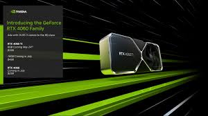

Placa de Vídeo RTX 4060
Visão Geral
A NVIDIA RTX 4060 é uma placa de vídeo de gama média que promete excelente desempenho para jogos em 1080p e 1440p, além de ser uma excelente opção para quem busca uma GPU com ótimo custo-benefício. Com a arquitetura Ada Lovelace, a RTX 4060 traz várias melhorias em relação à geração anterior, oferecendo mais desempenho e eficiência energética, com suporte para Ray Tracing e DLSS 3.
Desempenho
Em termos de desempenho, a RTX 4060 entrega uma performance sólida em títulos mais recentes, sendo capaz de rodar jogos em configurações altas em 1080p, como *Cyberpunk 2077*, *Control* e *Call of Duty Modern Warfare II*, com taxas de quadros acima de 60 FPS em configurações de qualidade alta.
Para aqueles que jogam em 1440p, a placa também se sai bem, mas, dependendo do título, será necessário ajustar algumas configurações gráficas para garantir uma jogabilidade suave. A RTX 4060 é uma opção sólida para jogos de alto nível em 1080p e uma escolha viável para jogadores que desejam uma boa performance em resoluções mais altas.
A adição do DLSS 3 e do Ray Tracing são grandes diferenciais, mas em jogos que exigem o Ray Tracing em sua máxima qualidade, como *Cyberpunk 2077*, o desempenho pode sofrer uma leve queda. No entanto, o DLSS ajuda significativamente a compensar essa perda, melhorando a performance sem comprometer a qualidade visual.
Preço
Um dos principais atrativos da RTX 4060 é seu preço. Lançada com um preço mais acessível em comparação com suas irmãs mais poderosas, como a RTX 4070 e 4080, ela oferece um desempenho muito bom para quem busca uma experiência de qualidade em jogos sem precisar investir tanto. O preço de lançamento gira em torno de R$ 2.400 a R$ 2.800 (dependendo da região), o que torna a placa uma opção atraente para quem não precisa da potência das placas topo de linha, mas quer uma experiência de qualidade.
Comparada com a RTX 3060, o modelo anterior, a RTX 4060 apresenta uma relação custo-benefício muito mais favorável, com um desempenho superior e um preço que cabe melhor no bolso, especialmente para quem está atualizando seu PC para jogos modernos sem quebrar o banco.
Conclusão
A NVIDIA RTX 4060 é uma excelente escolha para quem quer aproveitar as tecnologias mais recentes, como Ray Tracing e DLSS 3, sem pagar o preço das placas topo de linha. Seu desempenho em 1080p e 1440p a torna uma das melhores opções para gamers que buscam uma boa performance em jogos atuais, enquanto o preço competitivo a torna ainda mais atraente. Se você está procurando uma placa de vídeo que balanceie custo e desempenho de maneira eficiente, a RTX 4060 definitivamente merece a sua atenção.